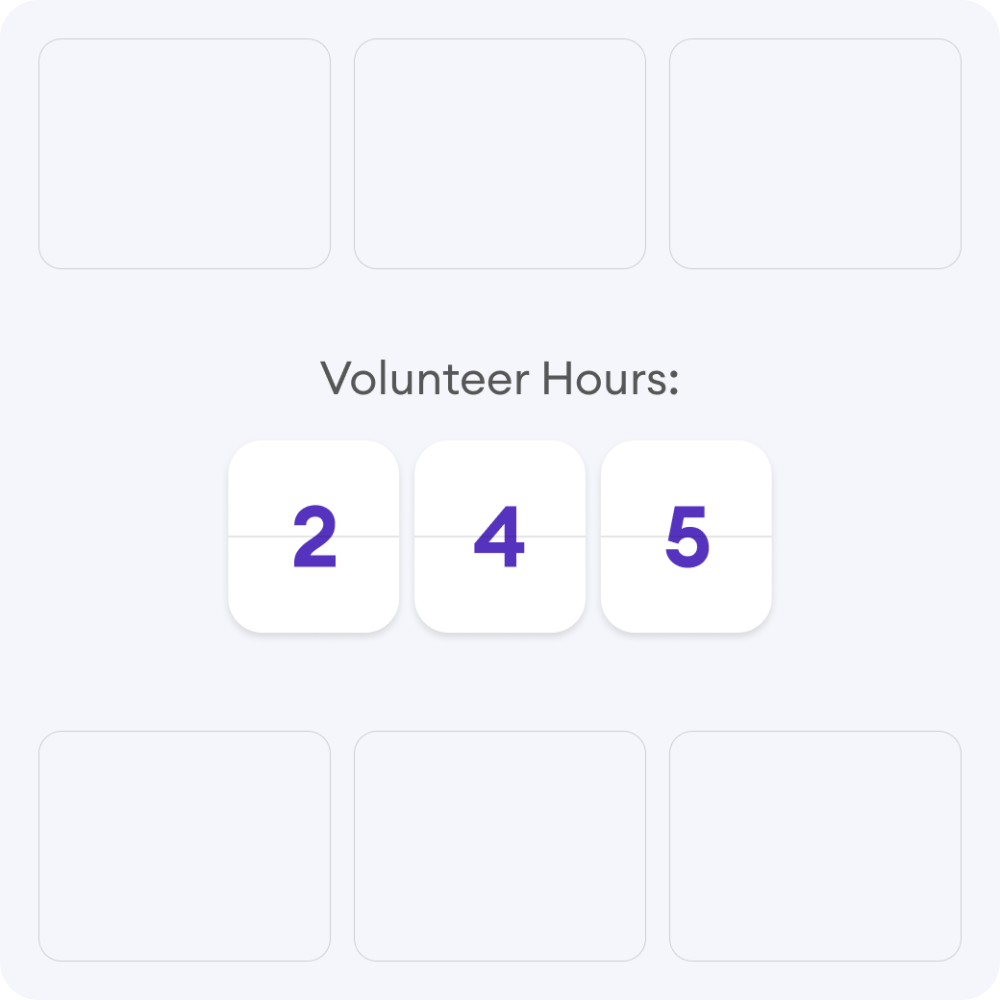
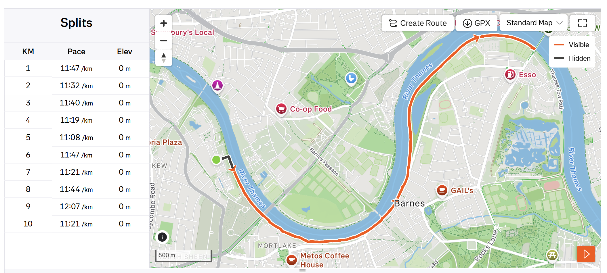

Volunteer Tracker
A Python application built to track volunteer activities, store entries in JSON, and present clear summaries through a polished command-line interface powered by Rich.
CodeSelected work
I have completed two projects that reflect my interests in practical software and data tracking.

A Python application built to track volunteer activities, store entries in JSON, and present clear summaries through a polished command-line interface powered by Rich.
Code
A Flask-based web application created to process GPX walking data, visualize routes, and generate useful insights from the recorded statistics.
Code